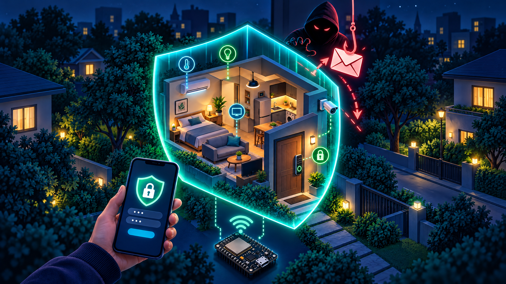

CERRADURA
CERRADA
La puerta está protegida.
PROYECTO DE INFORMÁTICA · IOT SEGURO
Una interfaz educativa para controlar una cerradura y una alarma domótica, y entender cómo una credencial robada podría convertirse en un acceso no autorizado.

CENTRAL DE CONTROL
La puerta está protegida.
No está vigilando.
Sistema listo para la demostración.
Medición del HC-SR04
Lectura analógica de la LDR
Se conserva hasta desarmar.
CONEXIÓN POR INTERNET
Es el ID_CASA del código del ESP32. El celular y la maqueta pueden estar en redes distintas: se comunican por el broker público HiveMQ y todos los mensajes viajan cifrados con la contraseña.
ACCESO SEGURO
Ingresá la contraseña del panel. Después de 3 intentos rechazados la central bloquea el acceso durante 5 minutos y suena un aviso.
La sesión queda abierta en este dispositivo hasta que presiones Cerrar sesión.
No vinculado
Para abrir o desarmar, este dispositivo debe vincularse. Escribí un nombre, presioná Vincular y luego el botón BOOT de la central dentro de los 30 segundos.
| Momento | Dispositivo | Acción | Resultado |
|---|---|---|---|
| Sin registros todavía. | |||
CASO DE CIBERSEGURIDAD
Primer factor. Si se filtra por phishing, por sí sola no abre la puerta.
Segundo factor. Solo un equipo aprobado con el botón de la central puede abrir o desarmar.
Tres intentos rechazados bloquean el acceso 5 minutos con aviso sonoro, y cada intento queda registrado.
El broker es público, pero los mensajes viajan cifrados con la contraseña: sin ella no se pueden leer ni falsificar.